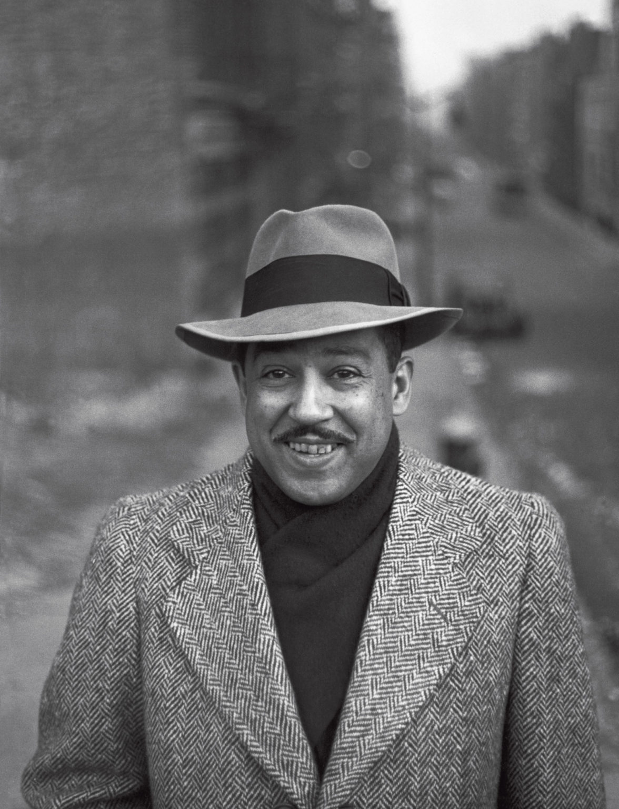

Langston Hughes
The poet behind the Harlem Rennaisance

Langston Hughes in his prime
A time line of Langston Hughe's life:
- 1902 - Born in Joplin, Missouri
- 1920 - Moves to Mexico to be with his father
- 1921 - Moves back to the states and attends Columbia, faculty of engineering
- 1923 - Travels to W.Africa
- 1926 - Joins Lincoln University
- 1929 - Graduates from Lincoln with a B.A degree
- 1930 - His novel, 'Not Without Laughter' wins the Harmon Gold Metal for literature
- 1934 - Publishes his first book on short stories, 'The Ways of White Folks'
- 1935 - Receives a Guggenheim Fellowship
- 1941 - Founds 'The Skyloft Players' which sought to nurture black playwrights and offer theatre from the black perspective
- 1943 - Creates his most famous fictional character, 'Jesse B. Semple'
- 1949 - Visiting lecturer at the University of Chicago Laboratory Schools
- 1954 - Hughes wins the Anisfield-Wolf Book Award
- 1960 - The NAACP awards Hughes the Spingarn Medal for distinguished achievements by an African Americn
- 1964 - Western Reserve university awarded Hughes an honorary Literature Degree.
- 1967 - Hughes passes away in the Stuyvesant Polyclinic in New York at 66 from complications after an abdominal surgery related to prostate cancer.
Life is for the living.
Death is for the dead.
Let life be like music.
And death a note unsaid.
-- Langston Hughes.